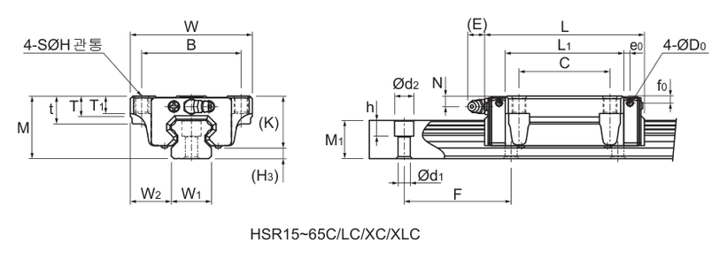
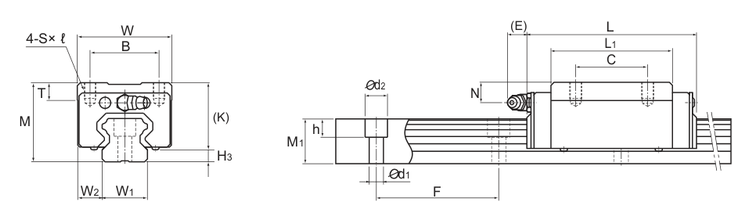
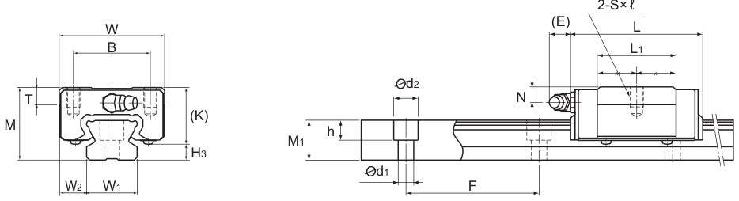
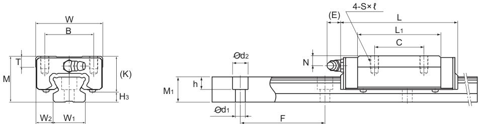
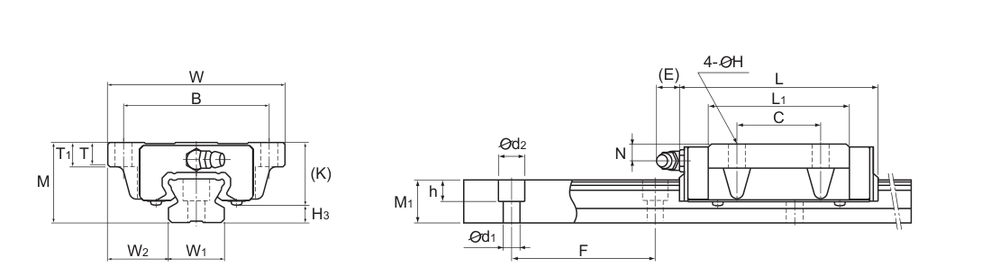

Linear Motion · Linear Guide (Linear Way)
궤도 레일(Track rail) 위를 볼이 순환하는 슬라이드 유닛(블록)이 직선 이동하는 구름 안내 기구입니다. 업계에서는 흔히 ‘LM 가이드’(THK 상표명에서 유래)라고 부르며, 둥근 축 위를 움직이는 리니어 부시와 달리 사각 레일을 사용해 상하·좌우 하중과 모멘트를 함께 지지하는 고강성 가이드입니다.
국내 LM 가이드 블록 시장은 삼익THK(Samick THK)가 THK(일본) 기술을 바탕으로 국내 생산하는 HSR·SR 형번 체계가 사실상의 표준입니다. 아래 탭에서 삼익THK 공식 카탈로그 기준 블록 종류별 규격을 확인하세요. HSR-C·HSR-R(총볼 타입, 4방향 등하중·45° 접촉, 범용 고강성형)과 SR-V·SR-W·SR-TB(총볼 타입, 90° 접촉·레이디얼 하중 특화, 낮은 단면) 5가지 블록 형상을 다룹니다. 블록·레일은 형번 체계상 별도 품목이므로 발주 시 각각 지정해야 합니다.
형번 또는 치수 일부만 입력해도 검색됩니다.
HSR-C·LC(총볼 타입·4방향 등하중형)입니다. 각 볼열이 45°로 배치되어 상하·좌우(정·역방향) 하중을 고르게 받는 범용 표준형이며, 블록 상부 좌우로 넓게 돌출된 플랜지에 탭 구멍(상부 체결)과 관통 구멍(하부 체결)을 함께 갖춰 어느 방향에서든 체결할 수 있습니다.
삼익THK(Samick THK) 공식 카탈로그 규격 도면(HSR-C·LC, p.14)

M(조립 높이) · W(블록 폭) · L(블록 길이) · B(체결구멍 가로 간격) · C(체결구멍 세로 간격) · S(탭 나사, 상부 체결) · H(관통구멍 지름, 하부 체결) · L1(체결구멍 중심간 길이) · K(블록 바닥∼구멍 저면) · N(블록 측면∼레일 측면) · E(그리스 니플 돌출폭) · C·C0(기본 동·정 정격하중).
| 형번 | M(높이) | W(폭) | L(길이) | B | C | S(탭) | H(관통) | L1 | K | N | E | C(kN) | C0(kN) | 질량(kg) |
|---|---|---|---|---|---|---|---|---|---|---|---|---|---|---|
| HSR15C | 24 | 47 | 56.6 | 38 | 30 | M5 | 4.5 | 38.8 | 19.3 | 4.3 | 5.5 | 10.9 | 15.7 | 0.2 |
| HSR20C / HSR20LC | 30 | 63 | 74 / 90 | 53 | 40 | M6 | 5.4 | 50.8 / 66.8 | 26 | 5 | 12 | 19.8 / 23.9 | 27.4 / 35.8 | 0.35 / 0.47 |
| HSR25C / HSR25LC | 36 | 70 | 83.1 / 102.2 | 57 | 45 | M8 | 6.8 | 59.5 / 78.6 | 30.5 | 6 | 12 | 27.6 / 35.2 | 36.4 / 51.6 | 0.59 / 0.75 |
| HSR30C / HSR30LC | 42 | 90 | 98 / 120.6 | 72 | 52 | M10 | 8.5 | 70.4 / 93 | 35 | 7 | 12 | 40.5 / 48.9 | 53.7 / 70.2 | 1.1 / 1.3 |
| HSR35C / HSR35LC | 48 | 100 | 109.4 / 134.8 | 82 | 62 | M10 | 8.5 | 80.4 / 105.8 | 40.5 | 8 | 12 | 53.9 / 65 | 70.2 / 91.7 | 1.6 / 2.0 |
| HSR45C / HSR45LC | 60 | 120 | 139 / 170.8 | 100 | 80 | M12 | 10.5 | 98 / 129.8 | 50 | 10 | 16 | 82.2 / 100 | 101 / 135 | 2.8 / 3.3 |
| HSR55C / HSR55LC | 70 | 140 | 163 / 201.1 | 116 | 95 | M14 | 12.5 | 118 / 156.1 | 57 | 11 | 16 | 121 / 148 | 146 / 194 | 4.5 / 5.7 |
| HSR65XC / HSR65XLC | 90 | 170 | 190.5 / 250 | 142 | 110 | M16 | 14.5 | 138.5 / 198 | 76 | 19 | 16 | 195 / 249 | 228 / 323 | 8.5 / 10.7 |
단위: mm · “/”는 표준형 / 롱블록(L…) 순서 · HSR15는 롱블록 없음 · HSR65는 X형(XC·XLC, 표에 수록) 외 A·B형도 있어 치수가 다를 수 있습니다.
LM 레일 치수
| 호칭 | W1(레일 폭) | M1(레일 높이) | F(피치) | 레일구멍 d1×d2×h | 길이 Max | kg/m |
|---|---|---|---|---|---|---|
| HSR15 | 15 | 15 | 60 | 4.5×7.5×5.3 | 3000 | 1.5 |
| HSR20 | 20 | 18 | 60 | 6×9.5×8.5 | 3000 | 2.3 |
| HSR25 | 23 | 22 | 60 | 7×11×9 | 3000 | 3.3 |
| HSR30 | 28 | 26 | 80 | 9×14×12 | 3000 | 4.8 |
| HSR35 | 34 | 29 | 80 | 9×14×12 | 3000 | 6.6 |
| HSR45 | 45 | 38 | 105 | 14×20×17 | 3090 | 11 |
| HSR55 | 53 | 44 | 120 | 16×23×20 | 3060 | 15.1 |
| HSR65 | 63 | 53 | 150 | 18×26×22 | 3000 | 22.5 |
※ 위 표는 삼익THK(Samick THK) 공식 카탈로그 ‘LM가이드’(HSR-C·LC, p.14 / HSR LM레일, p.14) PDF(e-lmsystem.co.kr 기술자료 배포본)를 기준으로 작성했으며, THK(일본) 공식 카탈로그 General Catalog A1(515-1E, A1-192∼193p)과 교차 확인했습니다. 블록 두께 세부 단차(t·T·T1), 그리스 니플 규격, 정적허용모멘트(MA·MB·MC)는 표에서 제외했습니다. 정밀 설계·발주 전에는 반드시 견적 문의로 최종 확인하시기 바랍니다.
HSR-R·LR(총볼 타입·4방향 등하중형, 슬림형)입니다. HSR-C와 하중 특성·레일은 동일하지만 플랜지 없이 좁고 높은 사각 블록 형태로, 탭 구멍(상부 체결)만 있어 설치 폭을 좁게 가져가야 하는 곳에 사용합니다.
삼익THK(Samick THK) 공식 카탈로그 규격 도면(HSR-R·LR, p.13)

M(조립 높이) · W(블록 폭) · L(블록 길이) · B(체결구멍 가로 간격) · C(체결구멍 세로 간격) · S×ℓ(탭 나사×깊이) · L1(체결구멍 중심간 길이) · K(블록 바닥∼구멍 저면) · N(블록 측면∼레일 측면) · E(그리스 니플 돌출폭) · H3(블록 하면∼레일 하면 간극) · C·C0(기본 동·정 정격하중).
| 형번 | M(높이) | W(폭) | L(길이) | B | C | S×ℓ(탭) | L1 | K | N | E | H3 | C(kN) | C0(kN) | 질량(kg) |
|---|---|---|---|---|---|---|---|---|---|---|---|---|---|---|
| HSR15R | 28 | 34 | 56.6 | 26 | 26 | M4×5 | 38.8 | 23.3 | 8.3 | 5.5 | 4.7 | 10.9 | 15.7 | 0.18 |
| HSR20R / HSR20LR | 30 | 44 | 74 / 90 | 32 | 36 / 50 | M5×6 | 50.8 / 66.8 | 26 | 5 | 12 | 4 | 19.8 / 23.9 | 27.4 / 35.8 | 0.25 / 0.35 |
| HSR25R / HSR25LR | 40 | 48 | 83.1 / 102.2 | 35 | 35 / 50 | M6×8 | 59.5 / 78.6 | 34.5 | 10 | 12 | 5.5 | 27.6 / 35.2 | 36.4 / 51.6 | 0.54 / 0.67 |
| HSR30R / HSR30LR | 45 | 60 | 98 / 120.6 | 40 | 40 / 60 | M8×10 | 70.4 / 93 | 38 | 10 | 12 | 7 | 40.5 / 48.9 | 53.7 / 70.2 | 0.9 / 1.1 |
| HSR35R / HSR35LR | 55 | 70 | 109.4 / 134.8 | 50 | 50 / 72 | M8×12 | 80.4 / 105.8 | 47.5 | 15 | 12 | 7.5 | 53.9 / 65 | 70.2 / 91.7 | 1.5 / 2.0 |
| HSR45R / HSR45LR | 70 | 86 | 139 / 170.8 | 60 | 60 / 80 | M10×17 | 98 / 129.8 | 60 | 20 | 16 | 10 | 82.2 / 100 | 101 / 135 | 2.6 / 3.1 |
| HSR55R / HSR55LR | 80 | 100 | 163 / 201.1 | 75 | 75 / 95 | M12×18 | 118 / 156.1 | 67 | 21 | 16 | 13 | 121 / 148 | 146 / 194 | 4.3 / 5.4 |
| HSR65XR / HSR65XLR | 90 | 126 | 190.5 / 250 | 76 | 70 / 120 | M16×20 | 138.5 / 198 | 76 | 19 | 16 | 14 | 195 / 249 | 228 / 323 | 7.3 / 9.7 |
단위: mm · “/”는 표준형 / 롱블록(L…) 순서 · HSR15는 롱블록 없음 · HSR65는 X형(XR·XLR, 표에 수록) 외 65R·65LR(치수 상이)도 있습니다.
LM 레일 치수
| 호칭 | W1(레일 폭) | M1(레일 높이) | F(피치) | 레일구멍 d1×d2×h | 길이 Max | kg/m |
|---|---|---|---|---|---|---|
| HSR15 | 15 | 15 | 60 | 4.5×7.5×5.3 | 3000 | 1.5 |
| HSR20 | 20 | 18 | 60 | 6×9.5×8.5 | 3000 | 2.3 |
| HSR25 | 23 | 22 | 60 | 7×11×9 | 3000 | 3.3 |
| HSR30 | 28 | 26 | 80 | 9×14×12 | 3000 | 4.8 |
| HSR35 | 34 | 29 | 80 | 9×14×12 | 3000 | 6.6 |
| HSR45 | 45 | 38 | 105 | 14×20×17 | 3090 | 11 |
| HSR55 | 53 | 44 | 120 | 16×23×20 | 3060 | 15.1 |
| HSR65 | 63 | 53 | 150 | 18×26×22 | 3000 | 22.5 |
※ 위 표는 삼익THK(Samick THK) 공식 카탈로그 ‘LM가이드’(HSR-R·LR, p.13 / HSR LM레일, p.14) PDF(e-lmsystem.co.kr 기술자료 배포본)를 기준으로 작성했으며, THK(일본) 공식 카탈로그 General Catalog A1(515-1E, A1-196∼197p)과 교차 확인했습니다. 정밀 설계·발주 전에는 반드시 견적 문의로 최종 확인하시기 바랍니다.
SR-V(총볼 타입·레이디얼 하중형, 단축 2홀)입니다. 볼 접촉각 90°로 레이디얼(수직) 방향 하중에 강하고 단면이 낮은 구조이며, SR-W보다 블록 길이가 짧고 체결 구멍이 2개뿐인 소형·경량 버전입니다.
삼익THK(Samick THK) 공식 카탈로그 규격 도면(SR-V, p.18)

M(조립 높이) · W(블록 폭) · L(블록 길이) · B(체결구멍 가로 간격) · S×ℓ(탭 나사×깊이, 2개) · L1(체결구멍 중심간 길이) · K(블록 바닥∼구멍 저면) · N(블록 측면∼레일 측면) · E(그리스 니플 돌출폭) · H3(블록 하면∼레일 하면 간극) · C·C0(기본 동·정 정격하중).
| 형번 | M(높이) | W(폭) | L(길이) | B | S×ℓ(탭) | L1 | K | N | E | H3 | C(kN) | C0(kN) | 질량(kg) |
|---|---|---|---|---|---|---|---|---|---|---|---|---|---|
| SR15V | 24 | 34 | 40.4 | 26 | M4×7 | 22.9 | 18.2 | 6 | 5.5 | 5.8 | 9.1 | 11.7 | 0.12 |
| SR20V | 28 | 42 | 47.3 | 32 | M5×8 | 27.8 | 22 | 6 | 12 | 6 | 13.4 | 17.2 | 0.2 |
| SR25V | 33 | 48 | 59.2 | 35 | M6×9 | 35.2 | 26 | 7 | 12 | 7 | 21.6 | 26.8 | 0.3 |
| SR30V | 42 | 60 | 67.9 | 40 | M8×12 | 40.4 | 32.5 | 8 | 12 | 9.5 | 29.5 | 34.4 | 0.5 |
| SR35V | 48 | 70 | 77.6 | 50 | M8×12 | 45.7 | 36.5 | 8.5 | 12 | 11.5 | 40.9 | 46.7 | 0.8 |
단위: mm · SR15∼35 범위만 수록(삼익THK 국내 생산 사이즈 기준) · SR15 레일은 M4용(Y)·M3용(무기호) 2종이 있습니다.
LM 레일 치수
| 호칭 | W1(레일 폭) | M1(레일 높이) | F(피치) | 레일구멍 d1×d2×h | 길이 Max | kg/m |
|---|---|---|---|---|---|---|
| SR15(Y) | 15 | 12.5 | 60 | 4.5×7.5×5.3 | 3000 | 1.2 |
| SR20 | 20 | 15.5 | 60 | 6×9.5×8.5 | 3000 | 2.1 |
| SR25(Y) | 23 | 18 | 60 | 7×11×9 | 3000 | 2.7 |
| SR30 | 28 | 23 | 80 | 7×11×9 | 3000 | 4.3 |
| SR35 | 34 | 27.5 | 80 | 9×14×12 | 3000 | 6.4 |
※ 위 표는 삼익THK(Samick THK) 공식 카탈로그 ‘LM가이드’(SR-V, p.18 / SR LM레일, p.19) PDF(e-lmsystem.co.kr 기술자료 배포본)를 기준으로 작성했으며, THK(일본) 공식 카탈로그 General Catalog A1(515-1E, A1-220∼221p)과 교차 확인했습니다. 정밀 설계·발주 전에는 반드시 견적 문의로 최종 확인하시기 바랍니다.
SR-W(총볼 타입·레이디얼 하중형, 표준 4홀)입니다. SR-V와 같은 저단면 구조에 체결 구멍이 4개로 늘어난 표준 길이 버전으로, SR 계열에서 가장 널리 쓰이는 기본형입니다.
삼익THK(Samick THK) 공식 카탈로그 규격 도면(SR-W, p.18)

M(조립 높이) · W(블록 폭) · L(블록 길이) · B(체결구멍 가로 간격) · C(체결구멍 세로 간격) · S×ℓ(탭 나사×깊이, 4개) · L1(체결구멍 중심간 길이) · K(블록 바닥∼구멍 저면) · N(블록 측면∼레일 측면) · E(그리스 니플 돌출폭) · H3(블록 하면∼레일 하면 간극) · C·C0(기본 동·정 정격하중).
| 형번 | M(높이) | W(폭) | L(길이) | B | C | S×ℓ(탭) | L1 | K | N | E | H3 | C(kN) | C0(kN) | 질량(kg) |
|---|---|---|---|---|---|---|---|---|---|---|---|---|---|---|
| SR15W | 24 | 34 | 57 | 26 | 26 | M4×7 | 39.5 | 18.2 | 6 | 5.5 | 5.8 | 13.8 | 20.5 | 0.2 |
| SR20W | 28 | 42 | 66.2 | 32 | 32 | M5×8 | 46.7 | 22 | 6 | 12 | 6 | 19.2 | 28.6 | 0.3 |
| SR25W | 33 | 48 | 83 | 35 | 35 | M6×9 | 59 | 26 | 7 | 12 | 7 | 30.9 | 44.7 | 0.4 |
| SR30W | 42 | 60 | 96.8 | 40 | 40 | M8×12 | 69.3 | 32.5 | 8 | 12 | 9.5 | 45.6 | 64.4 | 0.8 |
| SR35W | 48 | 70 | 111 | 50 | 50 | M8×12 | 79 | 36.5 | 8.5 | 12 | 11.5 | 60.4 | 81.8 | 1.2 |
단위: mm · SR15∼35 범위만 수록(삼익THK 국내 생산 사이즈 기준)
LM 레일 치수
| 호칭 | W1(레일 폭) | M1(레일 높이) | F(피치) | 레일구멍 d1×d2×h | 길이 Max | kg/m |
|---|---|---|---|---|---|---|
| SR15(Y) | 15 | 12.5 | 60 | 4.5×7.5×5.3 | 3000 | 1.2 |
| SR20 | 20 | 15.5 | 60 | 6×9.5×8.5 | 3000 | 2.1 |
| SR25(Y) | 23 | 18 | 60 | 7×11×9 | 3000 | 2.7 |
| SR30 | 28 | 23 | 80 | 7×11×9 | 3000 | 4.3 |
| SR35 | 34 | 27.5 | 80 | 9×14×12 | 3000 | 6.4 |
※ 위 표는 삼익THK(Samick THK) 공식 카탈로그 ‘LM가이드’(SR-W, p.18 / SR LM레일, p.19) PDF(e-lmsystem.co.kr 기술자료 배포본)를 기준으로 작성했으며, THK(일본) 공식 카탈로그 General Catalog A1(515-1E, A1-220∼221p)과 교차 확인했습니다. 정밀 설계·발주 전에는 반드시 견적 문의로 최종 확인하시기 바랍니다.
SR-TB(총볼 타입·레이디얼 하중형, 플랜지·하부체결)입니다. SR-W와 같은 저단면 구조에 좌우로 넓은 플랜지가 더해져 관통 구멍으로 아래에서 볼트 체결하는 타입입니다. 전장을 더 줄인 단축형 SR-SB도 있습니다(문의).
삼익THK(Samick THK) 공식 카탈로그 규격 도면(SR-TB, p.19)

M(조립 높이) · W(블록 폭) · L(블록 길이) · B(체결구멍 가로 간격) · C(체결구멍 세로 간격) · H(관통구멍 지름, 4개) · L1(체결구멍 중심간 길이) · K(블록 바닥∼구멍 저면) · N(블록 측면∼레일 측면) · E(그리스 니플 돌출폭) · H3(블록 하면∼레일 하면 간극) · C·C0(기본 동·정 정격하중).
| 형번 | M(높이) | W(폭) | L(길이) | B | C | H(관통) | L1 | K | N | E | H3 | C(kN) | C0(kN) | 질량(kg) |
|---|---|---|---|---|---|---|---|---|---|---|---|---|---|---|
| SR15TB | 24 | 52 | 57 | 41 | 26 | 4.5 | 39.5 | 18.2 | 6 | 5.5 | 5.8 | 13.8 | 20.5 | 0.2 |
| SR20TB | 28 | 59 | 66.2 | 49 | 32 | 5.5 | 46.7 | 22 | 6 | 12 | 6 | 19.2 | 28.6 | 0.4 |
| SR25TB | 33 | 73 | 83 | 60 | 35 | 7 | 59 | 26 | 7 | 12 | 7 | 30.9 | 44.7 | 0.6 |
| SR30TB | 42 | 90 | 96.8 | 72 | 40 | 9 | 69.3 | 32.5 | 8 | 12 | 9.5 | 45.6 | 64.4 | 1.1 |
| SR35TB | 48 | 100 | 111 | 82 | 50 | 9 | 79 | 36.5 | 8.5 | 12 | 11.5 | 60.4 | 81.8 | 1.5 |
단위: mm · SR15∼35 범위만 수록(삼익THK 국내 생산 사이즈 기준)
LM 레일 치수
| 호칭 | W1(레일 폭) | M1(레일 높이) | F(피치) | 레일구멍 d1×d2×h | 길이 Max | kg/m |
|---|---|---|---|---|---|---|
| SR15(Y) | 15 | 12.5 | 60 | 4.5×7.5×5.3 | 3000 | 1.2 |
| SR20 | 20 | 15.5 | 60 | 6×9.5×8.5 | 3000 | 2.1 |
| SR25(Y) | 23 | 18 | 60 | 7×11×9 | 3000 | 2.7 |
| SR30 | 28 | 23 | 80 | 7×11×9 | 3000 | 4.3 |
| SR35 | 34 | 27.5 | 80 | 9×14×12 | 3000 | 6.4 |
※ 위 표는 삼익THK(Samick THK) 공식 카탈로그 ‘LM가이드’(SR-TB, p.19 / SR LM레일, p.19) PDF(e-lmsystem.co.kr 기술자료 배포본)를 기준으로 작성했으며, THK(일본) 공식 카탈로그 General Catalog A1(515-1E, A1-222∼223p)과 교차 확인했습니다. 정밀 설계·발주 전에는 반드시 견적 문의로 최종 확인하시기 바랍니다.
당사 SWS 카탈로그 수록 품목이 아니므로, 정밀 가공·발주 전에는 반드시 견적 문의로 제조사·형번·치수를 최종 확인하시기 바랍니다. 레일 길이(L)와 정밀도 등급(보통급·상급·정밀급 등)·예압·레이디얼 클리어런스는 발주 시 별도 지정 사항이며, 정확한 사양은 발주 전 문의 바랍니다.